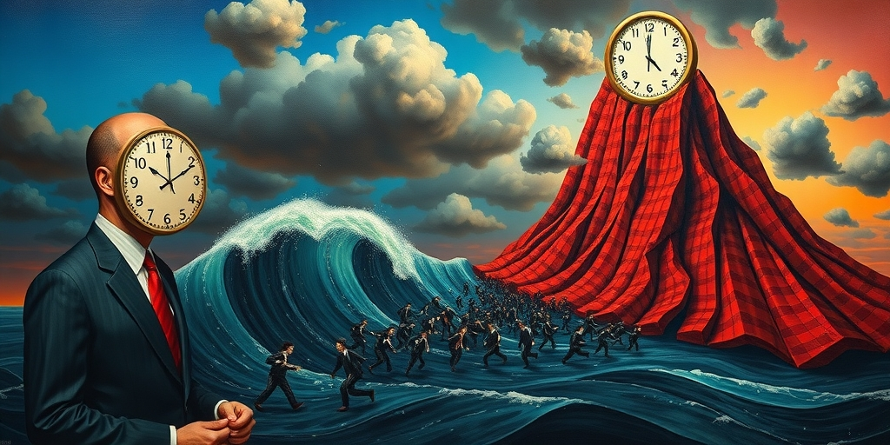
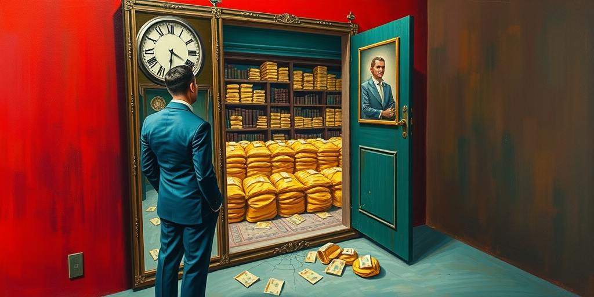

小汪老师的成长洞察 · 属于你的成长专栏
去问一个在A股活了二十年的人，他最怕什么。他不会说熊市。他会告诉你：牛市。那是所有钱消失的地方——不是一点一点磨掉，是在你最快乐的时候，一把火全烧光。

每一轮牛市的顶点，都有一个精确的指标：散户开户数创历史新高。资金净流入量同时达到峰值。新入场的人买在最高点。老投资者因为赚了钱，不断把仓位加到最大。
这不是偶然。是结构性的。牛市有一种独特的节奏——连续几个月的缓慢爬升，被一两天的剧烈暴跌打断。慢涨积累杠杆，急跌连环爆仓。美国多家券商的用户数据反复验证一个结论：散户在牛市中的平均收益率跑输通胀。表现最好的群体，是那些忘了密码的躺平型账户。

市场整体上涨30%的时候，所有人都觉得自己赚了30%。这是第一个幻觉。总有人跑输指数。于是换仓。追涨。再加仓。赚钱后把成功归于自己的判断力——心理学叫自我归因偏差。于是仓位在顶部达到最大。
频繁交易是另一个隐形杀手。看到别人的票涨得快，忍不住换过去。反复高买低卖。单次亏损看着不大，扣掉手续费和印花税后已所剩无几。更致命的是杠杆。熊市中你恐惧，不敢上杠杆。牛市中你贪婪，不断加码。而杠杆爆仓是永久性亏损。股票跌了还会涨回来。爆仓的钱不会。
亏损可以归咎于市场不好。踏空意味着别人都在赚钱，只有我傻站着。这种社交比较的痛苦，驱使人做出最糟糕的投资决策。进化心理学提供了一个解释：人类对看到别人得到而我没有的痛苦，远大于我失去已有的痛苦。
这不是贪婪。是数十万年部落生存留下的基因记忆。被排除在资源分配之外，意味着生存威胁。社交媒体把这个本能放大到极致。朋友圈晒收益。炒股群炫耀单。短视频里普通人炒股三个月赚百万。它们共同制造了一种群体幻觉：所有人都在暴富，只有我被抛弃。
近年来的散户运动，把投资变成了一场社会身份的确认仪式，而非资产配置决策。GameStop事件是这种心理的极端化。但结构没有变。机构在顶部区域有序出货，散户接货。机构有风控和止损纪律，散户靠感觉。
均值回归是市场上最残酷的物理定律。你赚的钱最终是别人亏的钱。而散户永远是信息链的最末端。牛市的本质，是一场财富从多数人转移到少数人的大规模事件。只是转移的过程太快乐了。所有人都不觉得痛。当所有人都觉得自己在赚钱，钱从哪来？这个问题没有答案。因为它本身就是答案。
写给你的话
你见过赌场里最热闹的时刻吗？不是有人赢了大钱的时候。是所有人都觉得自己要赢的时候。筹码推得最猛。笑声最大。然后灯光突然亮起来。你发现身边站着的，都是和你一样的人。不是说牛市不能赚钱。是问自己一句：我赚的是谁的钱？如果答不上来，答案可能就是你自己的。
小汪老师的成长洞察 · 属于你的成长专栏